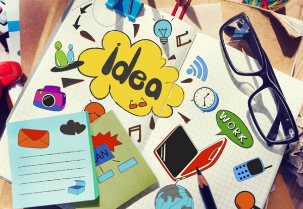
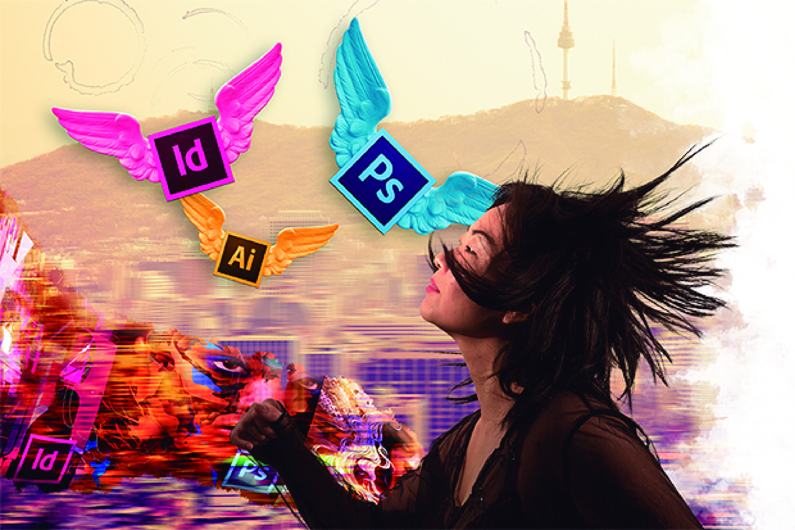

Contar con un profesional gráfico para cualquier proyecto es siempre un acierto. Por eso te damos a continuación seis razones por los que tienes que trabajar cuanto antes con un diseñador: Ayuda en la creación y el posicionamiento de la marca: con la entrega de un briefing por parte de la empresa, el diseñador gráfico tiene la capacidad de proyectar visualmente los valores y la personalidad de la marca. Aporta unidad: un diseñador gráfico se encarga de cuidar que la imagen y el estilo en la comunicación visual de una empresa siga una misma línea, algo imprescindible para su éxito. Manejo óptimo de los recursos: un diseñador gráfico administra de forma adecuada los materiales técnicos, humanos y económicos de cada proyecto, evitando así sorpresas y contratiempos. Profesionalidad: Asesora, hace modificaciones en el diseño y es puntual en las entregas. Productividad: un buen diseñador gráfico es eficiente y organiza adecuadamente sus tiempos de trabajo en función de cada proyecto. Notoriedad: es uno de los más importantes canales de comunicación entre la empresa y su público. Logra con sus diseños captar la captación de los consumidores. Entre las especializaciones más comunes que un diseñador gráfico puede tener destacan: Director de arte publicitario. Desarrollador multimedia, Diseñador Web, Creador de branding, Diseñador de packaging, Diseño de producto, Diseñador industrial e Ilustradores.
Esta carrera busca informar y expresar ideas a través de un lenguaje visual, dando una respuesta estética a una necesidad de comunicación. El profesional tendrá como objetivos principales la concepción de estrategias comunicativas, la supervisión de la producción y planeación de las piezas visuales publicitarias y gráficas. El profesional en Diseño Gráfico implementará metodologías y procesos de creación de imágenes, técnicas de expresión gráfica, y tecnologías computacionales, conducentes a la búsqueda de soluciones visuales óptimas a los problemas de la comunicación gráfica y publicitaria.La Comunicación Gráfica, se presenta como un campo de acción con gran proyección, que da cabida a múltiples perfiles laborales donde los apasionados por este campo pueden desarrollarse profesionalmente en diversos campos. Desde la imprenta, la creación de carteles, libros y fotografía, la comunicación visual ha tenido una importancia rotunda, y con avances permanentes en la Ciencia y Tecnología, desarrollando nuevas formas estéticas y maneras de transmitir mensajes no sólo mediante los Medios de Comunicación, sino también a través de las estéticas de las ciudades, urbes letradas de manera simbólica, representación también de los imaginarios colectivos. El estudiante de esta carrera tendrá fuertes bases semióticas para analizar y crear nuevos mensajes que vayan en pro de crear comunidades más equitativas.